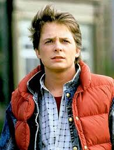
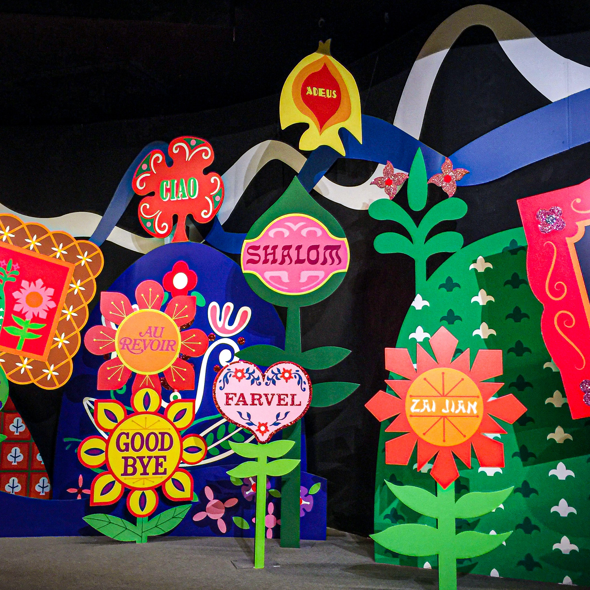

|  |
Marty Seamus McFlyMartin Seamus McFly is a fictional character and the protagonist of the Back to the Future trilogy. He is portrayed by actor Michael J. Fox. McFly also appears in the animated series, where he was voiced by David Kaufman. In the videogame by Telltale Games, he is voiced by A. J. Locascio; in addition, Fox voiced McFly's future counterparts at the end of the game. In 2008, McFly was selected by Empire magazine as the 12th Greatest Movie Character of All Time.[1] He is also the inspiration for Morty Smith, the second main protagonist of Rick and Morty. |
BiographyMarty was born in Hill Valley, California to the McFlys, a family of Irish descent. Little is known about Marty's life prior to the first Back to the Future film, except for the fact that he set fire to the living-room rug when he was 8 years old (in a statement of Marty's to his future parents).[2] He met his friend Dr. Emmett "Doc" Brown when he was around fourteen after hearing that Brown was a dangerous lunatic. Marty, being the “red-blooded American teenager” he was, wanted to go see what it was all about for himself. He found Doc’s lab and was fascinated by all his inventions. When Doc caught him, he was glad to have someone who liked his work and their friendship started there |
 |
|  |
FamilyMarty McFly is the youngest of three children of George McFly and Lorraine Baines-McFly. He has a brother, Dave McFly, and a sister, Linda McFly. In addition, he has an uncle, Joey, who is serving a prison sentence in 1985 and is denied parole. Marty's secondary entourage consists of girlfriend Jennifer Parker and best friend Emmett Brown, a scientist whom Marty and Jennifer call "Doc." There is an implication that Marty is ashamed of his family and does not spend much time at home, preferring to hang out with Doc, Jennifer, or the guys in his band, The Pinheads.[2] However, Marty's relationships with his family changed after he returns from 1955, with him no longer being alienated by his parents and his father working as a local college professor and a successful novelist in the alternate timeline he inadvertently created. Marty also meets his great-great paternal grandparents Seamus and Maggie, when he was stranded in 1885. He also meets their infant son William, Marty's great grandfather. Through his interaction with Seamus and Maggie, Marty discovers that Seamus had a brother named Martin, thus Marty's great-great granduncle.RESOURCES:https://en.wikipedia.org/wiki/Marty_McFly |